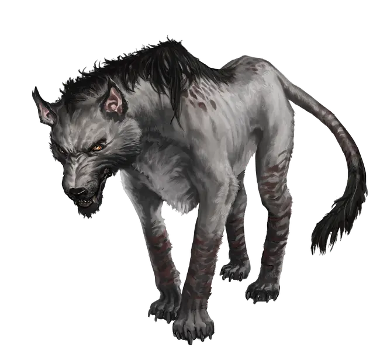

KatharSys p. 249
Gendos
Across the Balkhan and Borca, Gendos are feared as silent pack hunters whose patience and almost-human cunning have made them part of local myth. They watch settlements and travelers from a distance, avoiding a serious attack by day while testing and exhausting prey through feints, barking, and pursuit. At night the pack closes in, waiting for someone to separate before several animals strike from different sides and concentrate on the strongest target.
Local customs reflect that fear. Some communities burn their dead so vengeful souls cannot possess carrion-eating Gendos, bar their gates beneath a “wolf lamp,” or treat a Gendo skin as a potent omen. Professional hunters travel between settlements collecting bounties that can reach 20 Drafts per head, though villagers often regard such people with nearly as much suspicion as the animals they kill.
Most of a pack spends everything on the kill rather than Active Defense; only the alpha fights with real tactical caution. Packs usually retreat only after losing more than half their number. If the alpha dies first, the survivors become confused and violently erratic before finally fleeing. Gendos do not actively use Ego Points.
Combat Stats
- PROFILE
- Gendo
- INITIATIVE
- 8D / 6 Ego Points
- ATTACK
- Bite 7D, Distance 1m, Damage 1D+2
- DEFENSE
- Passive 1
Melee active (Dodge), Mobility 9D
Ranged Combat active (Sidestepping), Reaction 9D
Mental 8D - MOVEMENT
- 10D
- ARMOR
- Thick fur, 2 Armor
- CONDITION
- 10 (Trauma: 5)
Potential: Pack sense
As long as the alpha leader lives, all animals of the pack get +2S to Mental Defense.